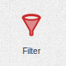

Filter¶

The filter element receives an event, runs some logic with it and emits an event if the value of the output field keep is true otherwise it discards the event.
The logic to decide if the event should continue or be dropped is done through a visual language.
To start with a pre made filter expand the Templates section and select Filter Templates there you can find some pre made blocks to start filtering.